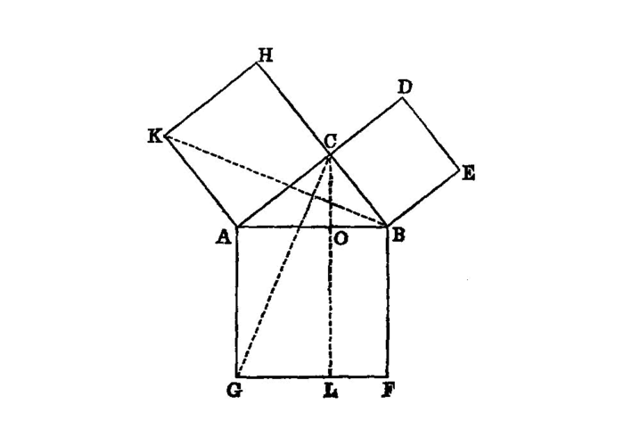
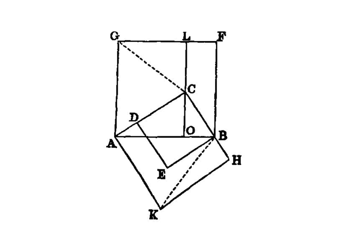

the squares on the sides of a right triangle are equal to the square on the hypotenuse
 {kind=link}
{kind=link}
In right-angled triangles the square on [^I.47:1] the side subtending the right angle [^I.47:2] is equal to the squares on the sides containing the right angle.
===
Let ABC be a right-angled triangle having the angle BAC right;
I say that the square on BC is equal to the squares on BA, AC.
For let there be described on BC the square BDEC, and on BA, AC the squares GB, HC; [I.46] through A let AL be drawn parallel to either BD or CE, and let AD, FC be joined.
Then, since each of the angles BAC, BAG is right, it follows that with a straight line BA, and at the point A on it, the two straight lines AC, AG not lying on the same side make the adjacent angles equal to two right angles;
therefore CA is in a straight line with AG. [I.14]
For the same reason
BA is also in a straight line with AH.
And, since the angle DBC is equal to the angle FBA: for each is right: let the angle ABC be added to each;
therefore the whole angle DBA is equal to the whole angle FBC. [I.c.n.2]
And, since DB is equal to BC, and FB to BA, the two sides AB, BD are equal to the two sides FB, BC respectively, [^I.47:3]
and the angle ABD is equal to the angle FBC; therefore the base AD is equal to the base FC, and the triangle ABD is equal to the triangle FBC. [I.4]
Now the parallelogram BL is double of the triangle ABD, for they have the same base BD and are in the same parallels BD, AL. [I.41]
And the square GB is double of the triangle FBC, for they again have the same base FB and are in the same parallels FB, GC. [I.41]
[But the doubles of equals are equal to one another.] [^I.47:4]
Therefore the parallelogram BL is also equal to the square GB.
Similarly, if AE, BK be joined, the parallelogram CL can also be proved equal to the square HC;
therefore the whole square BDEC is equal to the two squares GB, HC. [I.c.n.2]
And the square BDEC is described on BC,
and the squares GB, HC on BA, AC.
Therefore the square on the side BC is equal to the squares on the sides BA, AC.
Therefore etc.
## References
[I.4]: /elem.1.4 “Book 1 - Proposition 4” [I.14]: /elem.1.14 “Book 1 - Proposition 14” [I.41]: /elem.1.41 “Book 1 - Proposition 41” [I.46]: /elem.1.46 “Book 1 - Proposition 46” [I.c.n.2]: /elem.1.c.n.2 “Book 1 - Common Notion 2”
## Footnotes
- [^I.47:1]: the square on
, <foreign lang=”greek”>τὸ ἀπὸ…τετρἁγωνον</foreign>, the word <foreign lang=”greek”>ἀναγραφέν</foreign> or <foreign lang=”greek”>ἀναγεγραμμένον</foreign> being understood.
- [^I.47:2]: subtending the right angle.
Here <foreign lang=”greek”>ὑποτεινούσης</foreign>, <quote>subtending,</quote> is used with the simple accusative (<foreign lang=”greek”>τὴν ὀρθὴν γωνίαν</foreign>) instead of being followed by <foreign lang=”greek”>ὑπό</foreign> and the accusative, which seems to be the original and more orthodox construction. Cf. <a href=”/elem.1.18”>I. 18</a>, note.
- [^I.47:3]: the two sides AB, BD….
Euclid actually writes <quote>`DB`, BA,</quote> and therefore the equal sides in the two triangles are not mentioned in corresponding order, though he adheres to the words <foreign lang=”greek”>ἑκατέρα ἑκατέρα</foreign> <quote>respectively.</quote> Here DB is equal to BC and BA to FB.
- [^I.47:4]: [But the doubles of equals are equal to one another.]
Heiberg brackets these words as an interpolation, since it quotes a <title>Common Notion</title> which is itself interpolated. Cf. note on <a href=”/elem.1.37”>I. 37</a>, p. 332, and on interpolated <title>Common Notions</title>, pp. 223-4.